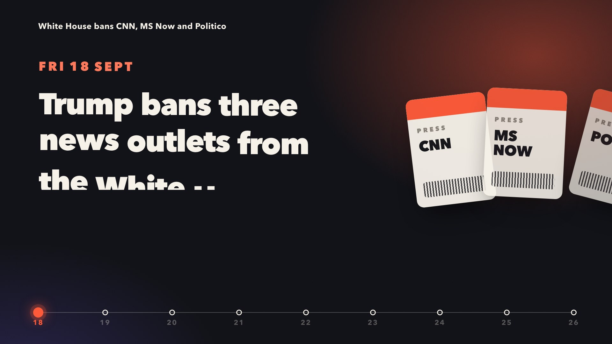
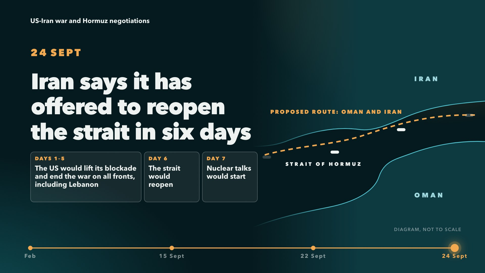
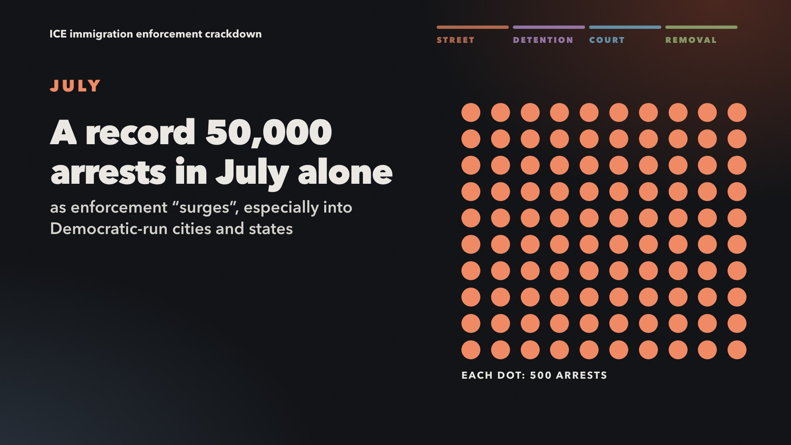

What it is
Storylines is a Guardian module for topic pages. A model reads the latest 200 pieces on a topic and picks the three strongest Storylines: chains of connected events, each with five key stories and a few supporting pieces such as explainers, opinion and video. It selects and orders the journalism, and writes nothing but a short title.
This project tests an idea: that this kind of structured, editorially grounded selection is a good foundation for much richer formats. The outputs can be as ambitious in form as they like. In substance they must stay entirely faithful to the Guardian’s journalism. If anything in an output can’t be traced back to a Guardian article, the experiment has failed.
How the outputs are made
Claude, an AI model, fetches the full text of each article in a Storyline through the Guardian’s Content API. It then writes the output using those articles and nothing else: no web searches, and none of its own knowledge.
Every sentence is tied to the passage in the article that supports it. A build script checks each quote and figure against the article text, and refuses to build the page if one doesn’t match. Each output comes with a provenance manifest, listing every piece of text, its source and the supporting passage, followed by a note of anything uncertain or left out.
The videos work the same way. Each is written as a web page in which every frame is a function of time, reads its words only from the checked list, and is rendered frame by frame to a 1080p MP4. Their pages carry a transcript of everything on screen, each line linked to its article.
None of the outputs has yet been checked by a Guardian editor.
Outputs so far
Explainers
A five-minute read for someone new to the story, with an interactive diagram.
- White House bans CNN, MS Now and PoliticoExplainer, with a day-by-day grid of the nine days from the ban to Air Force One
- US-Iran war and Hormuz negotiationsExplainer, with Iran’s seven-day timetable as a step-through diagram
- ICE immigration enforcement crackdownExplainer, with the immigration system drawn stage by stage
Videos
Fifteen seconds of motion graphics, from the first development to the latest, without sound.

White House bans CNN, MS Now and PoliticoPress passes switched off and on, and the TV pool going dark
US-Iran war and Hormuz negotiationsShipping through the strait thins out, and Iran’s offer is built day by day
ICE immigration enforcement crackdownThe Guardian’s reporting in date order, stage by stage
Diary
-
Fifteen-second videos Milestone
The same three Storylines as motion graphics: 15 seconds each, 1080p, silent, in each explainer’s colours so the two sets belong together. The brief was to make a showreel piece that still tells someone new to the story what happened, in what order, and why it matters.
Fifteen seconds forces choices. Each video keeps a date rail along the bottom so the order is never in doubt, lets a drawn object carry each story (press passes switched off and on; shipping in the strait thinning to a trickle; a strip of the four stages of the immigration system), and ends on a card crediting every article. Everything the explainers could hedge in a clause had to fit in a few words here, so each line went through the same source checks and a separate fact-check.
The animations are written as web pages and rendered frame by frame, so they can be re-rendered or changed without starting again. Each video’s page has a transcript of what is on screen, linked to the journalism, for anyone who can’t or would rather not watch.
-
Live on the web Milestone
The three explainers are now public, each with its provenance manifest as a web page linked from the footer. The full text of the fetched Guardian articles stays offline: publishing it would mean republishing the journalism, so the manifests quote only the short passages that support each sentence.
-
The first explainers Milestone
Three explainers, one for each Storyline on the Trump administration topic page, generated on 26 September. Each is a single page that works offline and on a phone, meant to take about five minutes to read.
The three Storylines have different shapes, so each page has its own diagram. The press ban is a tight chain of events over nine days, so it gets a day-by-day grid showing who did what and whether the outlets could get into the building. The Iran Storyline turns on an offer with a timetable, so the diagram is that timetable, set against the 60 days of the June agreement. The ICE Storyline is less a chain than a set of reports on different parts of one system, so it is organised by stage: arrest, detention, the courts and removal.
The words and the checking come from a shared kit. Each explainer’s text lives in a file that pairs every sentence with its supporting passage, and the build fails on any quote or figure it can’t find in the source.
The build checks that quotes and figures exist in the articles, but not whether a paraphrase says more than the article does. So a second pass had a separate fact-checker read each page against the full articles. They found no wrong figures, but several dozen places where the wording went further than the reporting: a hedge dropped (“reportedly mistook him” became “a mistaken arrest”), a quote trimmed so that it changed meaning, an analyst’s judgment stated as fact, and one detail from outside the sources entirely (Benjamin Netanyahu described as Israel’s prime minister, which none of the articles says). All were fixed.
Two ICE articles, on the Austin shooting and on miscarriages in detention, could not be fetched at our Content API access level. That explainer uses only their headlines and standfirsts, and says so in its manifest.